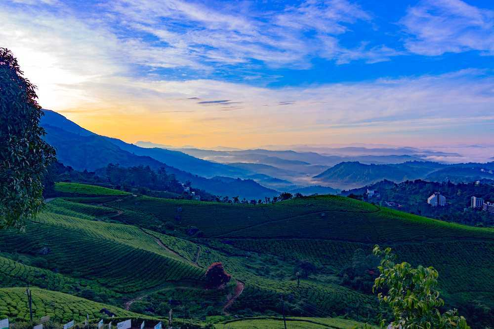
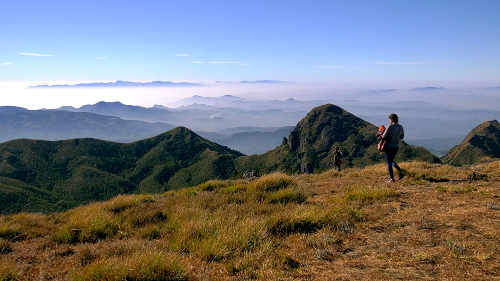
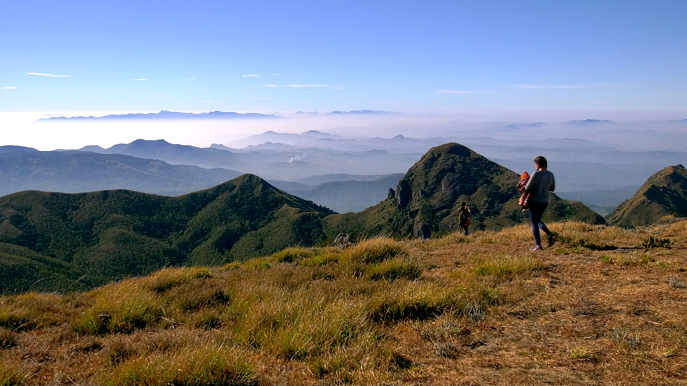
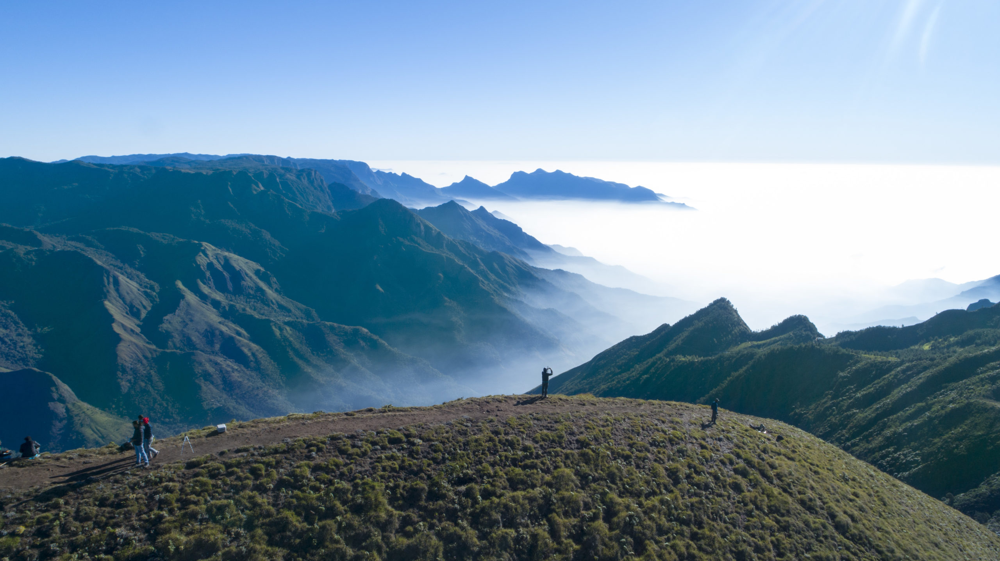
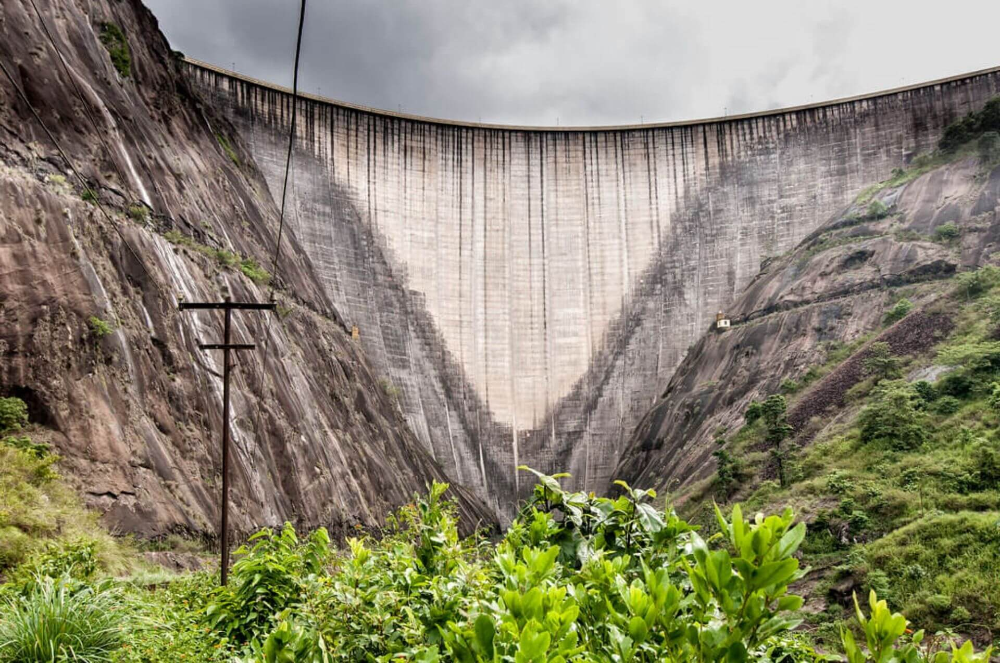
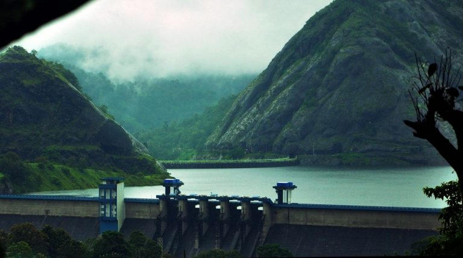
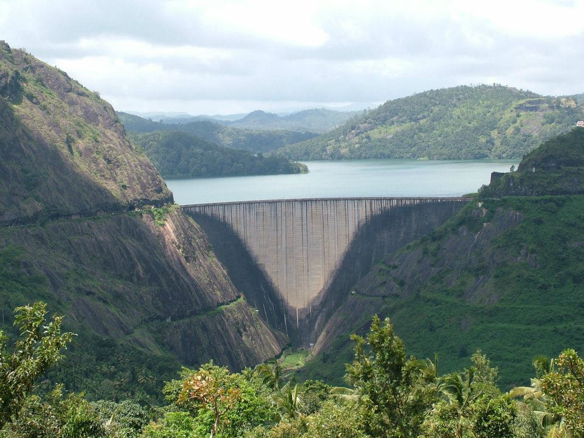

IDUKKI - Spice Garden of Kerala
1. ANAMUDI PEAK

Anamudi Peak Munnar is the highest peak in South India with an elevation of 2,695 metres and is in Idukki District in Kerala. You can get into Anamudi peak from Eravikulam National Park in Munnar and view the frosty peak from the Marayoor or Udumalpet road in Munnar.Anamudi which is the highest point in Kerala is located in the Idukki district in border of Devikulam taluk and Kothamangalam Taluk of Ernakulam district. The peak with an elevation of 2,695 meters is hailed as the highest peak in Kerala and South India. Anamudi stands tall in Eravikulam National Park. Loaded with large flora and fauna, Anamudi peak has been an enormous habitat to a wide surviving population of Asian Elephants, Nilgiri Langurs, Lion-tailed macaque, Gaurs and many more.
Blanketed with the evergreen forests and rivers, streams flowing inside the jungle makes the Anamudi enchanting. Tourists are given the memorable opportunity to trek inside the jungle to the top of the mountain and enjoy the wild noise and beauty of the Vaigai, Thamirabarani and Periyar Rivers.

As Anamudi is surrounded by the dense forest of Eravikulam National Park, a wide variety of animals like Nilgiri tahr is residing there which are under the threat of extinction. Other animals including Asian elephants, Guar, Bengal tigers, Nilgiri marten etc. are some of the rare species found at Anamudi. The uncommon frog Raorchestes resplendens also resides in Anamudi peak. These rare and recently discovered species are located in Eravikulam National Park.
The spectacular view that Anamudi offers you includes the wildlife beauty of Thekkady, Tamil Nadu, and Munnar. The Anamudi peak is enriched with short Arundinaria densifolia, Anaphalis, Impatiens, Gaultheria and other species of Eriocaulon. Anamudi is the prominent trekking expedition spot in Munnar. It is the highest peak outside the mountain ranges of the Himalayas in India.
2. MEESHAPULIMALA
 
 The second highest peak in the Western Ghats after Anamudi, Meesapulimala in Idukki district is a popular spot for trekking and camping. The hill (mala) gets its name from its resemblance to a whiskered (meesa) and tiger (puli) when viewed from the southwest direction. Situated around 20 km from Munnar, the hill is located between Anaimalai Hills and Palani Hills. From the peak, we can get a good glimpse of Munnar and neighbouring Suryanelli, and if enveloping clouds descend we can see the border shared between Kerala and Tamil Nadu. The cool mountain air, lush green environs, the gushing streams and the blooming rhododendrons along the valleys - all add exquisiteness to the fame of the mountains.

We can either stay in the tents arranged by Kerala Forest Department at the base camp and go trekking to Meesapulimala or Rhodo Valley. Another stayover programme, especially for honeymooners, is the Sky Cottage located on a cliff facing a waterfall. We can have amazing and unending views of Anamudi peaks and also get a view of the starry sky at night. Rhodo Mansion is another excellent stay option for those who wish to explore the altitudinal starry night.
3. IDUKKI DAM
  The Idukki Dam, located in Kerala, India, is a 168.91 m (554 ft) tall arch dam. The dam stands between the two mountains – Kuravanmala (839)m and Kurathimala (925)m. It was constructed and is owned by the Kerala State Electricity Board. It supports a 780 MW hydroelectric power station.
It is built on the Periyar River, in the ravine between the Kuravan and Kurathi Hills in Kerala, India. At 167.68 metres, it is one of the highest arch dams in Asia and third tallest arch dam. It started generating power on 4 October 1975.[1] Technically, the dam type is a concrete double curvature parabolic, thin arc dam.

This dam was constructed along with two other dams at Cheruthoni and Kulamavu. Together, the three dams have created an artificial lake that is 60 km² in area. The stored water is used to produce electricity at the Moolamattom Power house, which is located inside nearby rocky caves. The Government of Canada aided in the building of the dam with long term loans and grants